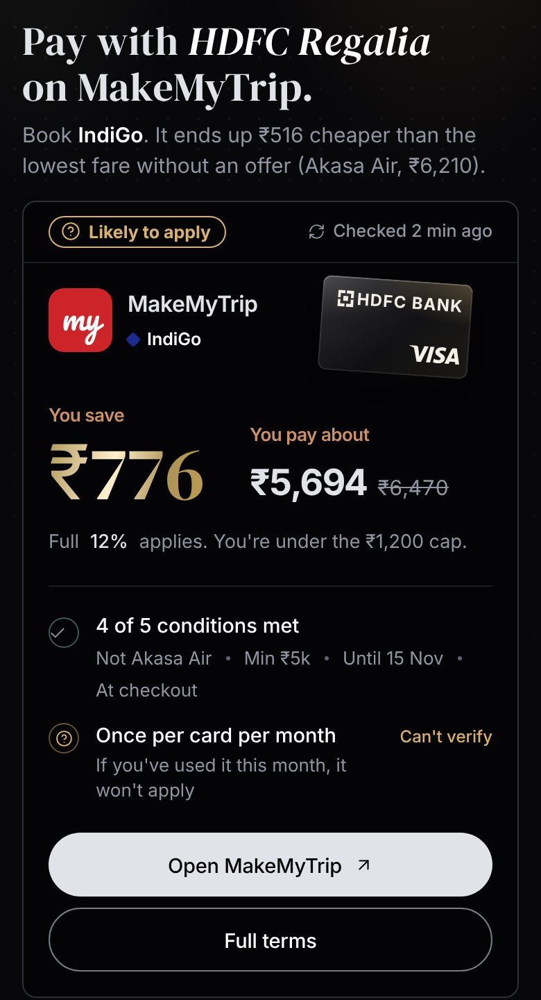
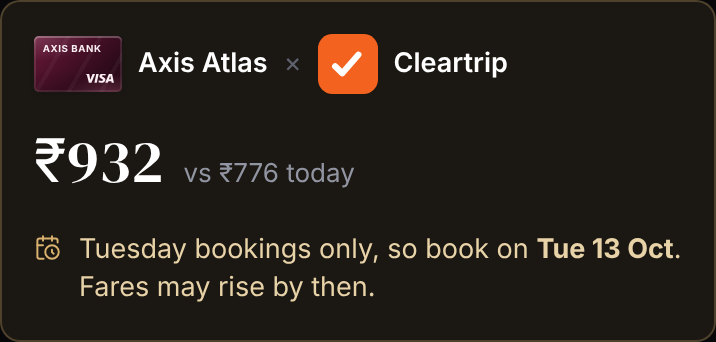
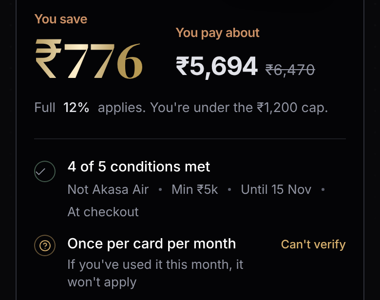
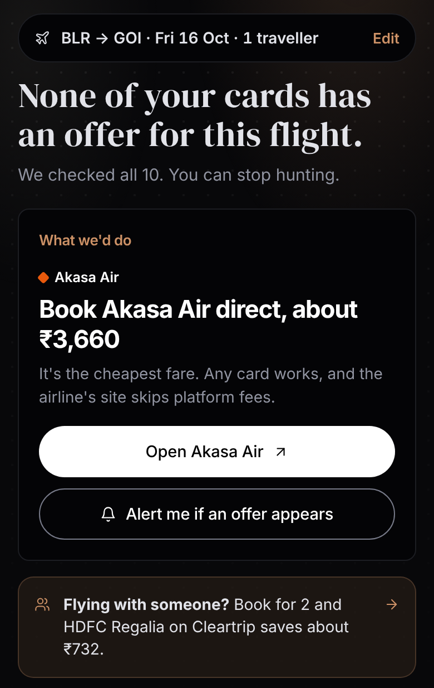
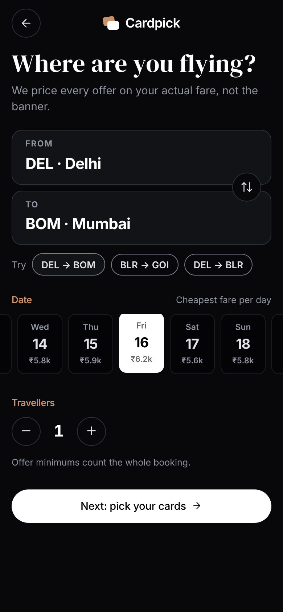
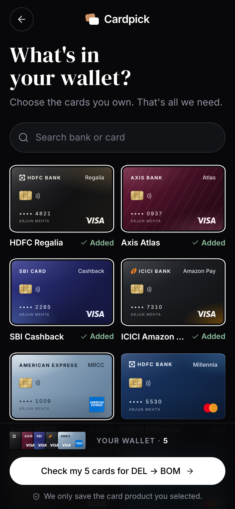
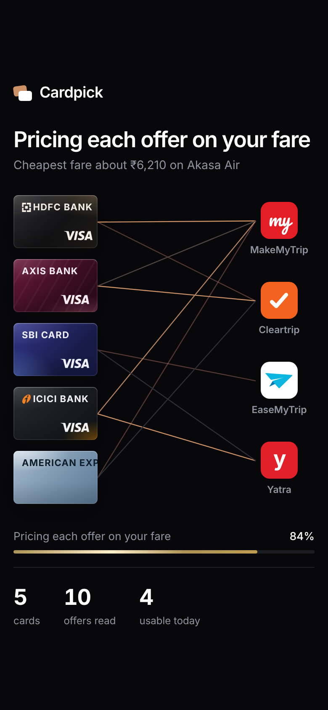
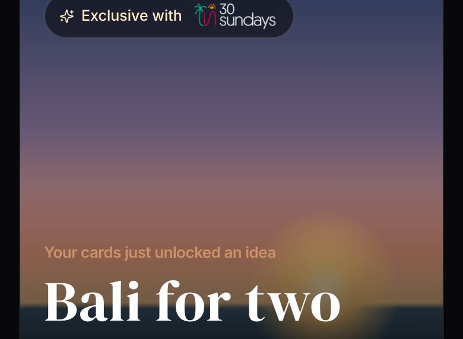
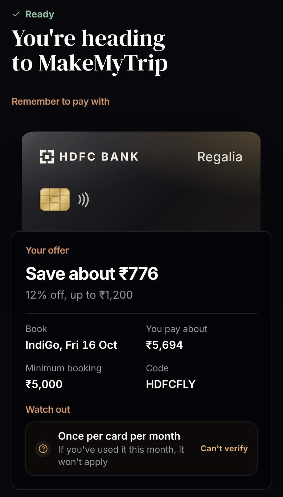
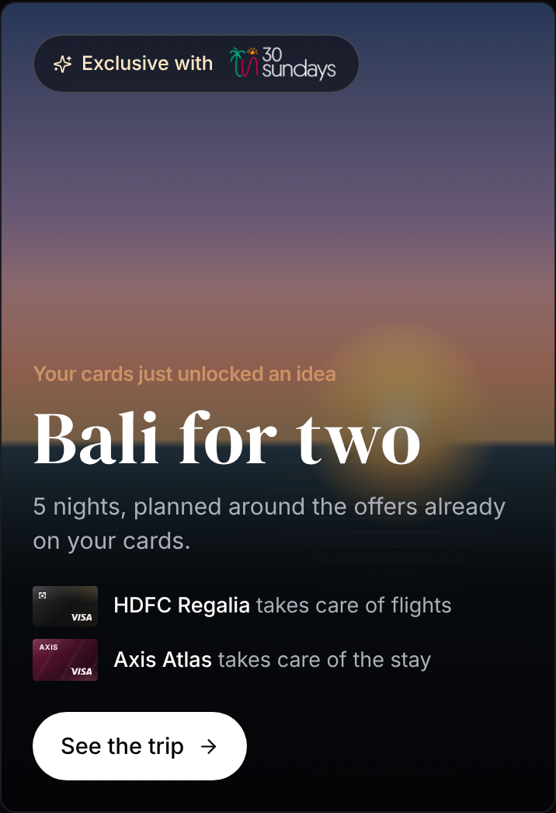

Cardpick tells you which card to pay with, and where to book, for one specific flight. Every offer is judged on the fare you will actually pay, never on the number printed on the banner.
Flight offers are spread across bank sites, OTAs and airlines, and each one carries its own rules. Most people hold three to six cards and still book without knowing which one to use. The biggest discount on a banner is often not the cheapest ticket once caps, minimum spends and airline exclusions come into play.

The hardest call in this brief is that the offer saving the most is often the one least likely to work. I rank on the price someone will probably pay, and I show the catch instead of burying it.

Conditions are where trust is won or lost, so I kept them visible and kept them calm. Rules that are already met fold into one line. Anything that could still block the discount gets its own row, written as what happens to you: “If you’ve used this offer this month, it won’t apply.”
The advertised figure appears only when it differs from what you get, for example when a cap cuts 12% down to 9.2%. The full terms stay one tap away for anyone who wants them.

Sometimes the honest answer is no, and I treat that as a result in its own right. On Bengaluru to Goa every fare sits below every minimum spend. The headline says so, the next step is the cheapest direct fare, and each near miss explains what would have unlocked it, such as booking for two people.
I deliberately left out any suggestion to apply for a new card. Saving a few hundred rupees once is not worth the user’s trust.




I kept the screen quiet so the recommendation and the saving lead. A serif for headlines, plain text for everything else, copper for labels and gold only for money. That gives a clear order of reading without extra decoration.


